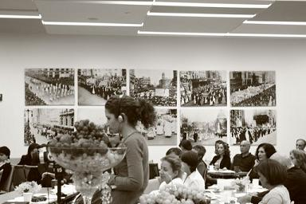
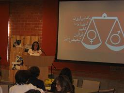
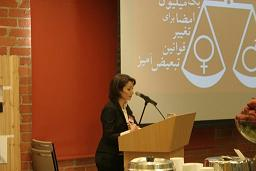
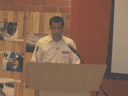
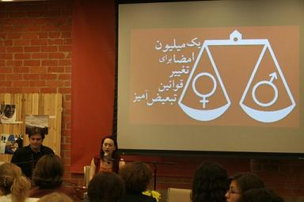
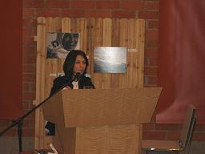
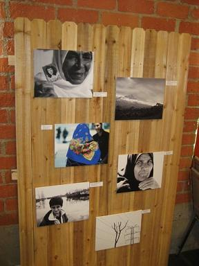
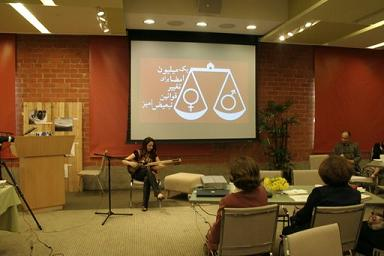
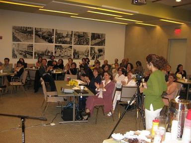

|
|
روز جهانی زن همراه با کمپین در کالیفرنیا
Saturday25 اسفند 1386

بعد از ظهر روز هشتم مارس مراسمی با صرف چای و شیرینی به مناسبت روز جهانی زن توسط گروه کمپین در کالیفرنیا ترتیب داده شد . سالن برگزاری این جشن از طرف گروه غیر دولتی حقوق زنان (فمینیست مجوریتی) در اختیار گروه کمپین در کالیفرنیا قرار گرفته بود. در این برنامه که در حدود 65 نفر در آن شرکت کردند معرفی کوتاهی از کمپین یک میلیون امضا و دستاوردها و مشکلات آن در سال گذشته توسط یکی از اعضای کمپین در کالیفرنیا٬ سودابه فرخ نیا٬ ارائه شد. همینطور به مناسبت سالگرد فعالیت گروه کمپین در کالیفرنیا خلاصه ای از تلاش های این گروه توسط یکی از اعضای این گروه مطرح شد. سپس به نمایندگی از سایر اعضا٬ امید کوهی به بیان تجربه هایی از زندگی خود پرداخت و این که به عنوان یک پسر در فامیل و در زندگی شخصی همواره شاهد مشکلات زنان خانواده خود که برای او بسیار عزیز هستند بوده است. وی ادامه داد که دلیل این که اعضای این گروه برای کمپین فعالیت می کنند این است که خواست تغییر این قوانین از ته قلب تک تک فعالین این کمپین بر می آید
  
در ادامه هنرمند برجسته خانم مامک خادم به اجرای چند قطعه موسیقی پرداختند و خانم پرتو نوری علا شعر زیبای خود به نام "انسانم من" را برای حاضرین خواندند (موضوع این شعر مکالمه یک زن با فرهنگ مردسالار است). سپس روجا بندری خلاصه ای از کارهایی که می توان برای همکاری با این حرکت انجام داد از جمله تلاش بین المللی برای حمایت از امنیت فعالان کمپین در ایران را برای مهمانان مطرح کرد و از همه دعوت شد که به نوبه خود حتی با برداشتن یک قدم کوچک به این حرکت کمک کنند . برنامه با اجرای زیبای قطعاتی با تار توسط هنرمند جوان خانم صهبا مطلبی ادامه پیدا کرد و در پایان فعال حقوق بشر خانم ثریا فلاح که در نشست حقوق زنان در سازمان ملل متحد شرکت کرده بودند گزارش کوتاهی از مطرح شدن مسایل زنان ایرانی در این نشست ارائه کردند


در کنار این برنامه یک نمایشگاه کوچک از آثار هنری عکس و نقاشی با تلاش تعدادی دیگر از اعضای گروه برگزار شد. قسمتی دیگر از دیوارهای اتاق متعلق بود به عکس هایی از کمپین در ایران و توضیحات دقیقی از فشارهای وارد بر فعالین کمپین و سایر فعالین حقوق زنان ( همراه با گزارش هایی که توسط گروه عفو بین الملل منتشر شده بود). تعدادی از تقویم های کمپین ، کتاب مجموعه مقالات جلوه جواهری و تی شرت هایی با طرحی که توسط یکی از فعالان کمپین در کالیفرنیا طراحی شده بودند برای خرید وجود داشتند و درآمد حاصل از فروش آنها و همچنین از فروش عکس یا نقاشی در نمایشگاه برای پرداخت هزینه های این برنامه و سایر برنامه های گروه کمپین در کالیفرنیا استفاده خواهد شد. گروه کمپین در کالیفرنیا گروهی متشکل از 10-15 نفر از دانشجویان و جوانان ایرانی ساکن جنوب کالیفرنیا می باشد که به طور داوطلبانه برای کمپین با یکدیگر همکاری می کنند. نیکا کریمی، پیمان ملاذ، شهریارعظیمی٬ الهام قیطانچی و لیلا وزیری اعضای دیگری از این گروه بودند که در مدت یک ماه گذشته برای برگزاری این مراسم بی وقفه تلاش کردند


